E Regression modeling
Regression analysis is a powerful and flexible framework that allows an analyst to model an outcome (the response variable) as a function of one or more explanatory variables (or predictors). Regression forms the basis of many important statistical models described in Chapters 9 and 11. This appendix provides a brief review of linear and logistic regression models, beginning with a single predictor, then extending to multiple predictors.
E.1 Simple linear regression
Linear regression can help us understand how values of a quantitative (numerical) outcome (or response) are associated with values of a quantitative explanatory (or predictor) variable. This technique is often applied in two ways: to generate predicted values or to make inferences regarding associations in the dataset.
In some disciplines the outcome is called the dependent variable and the predictor the independent variable. We avoid such usage since the words dependent and independent have many meanings in statistics.
A simple linear regression model for an outcome \(y\) as a function of a predictor \(x\) takes the form: \[ y_i = \beta_0 + \beta_1 x_i + \epsilon_i \,, \text{ for } i=1,\ldots,n \,, \] where \(n\) represents the number of observations (rows) in the data set. For this model, \(\beta_0\) is the population parameter corresponding to the intercept (i.e., the predicted value when \(x=0\)) and \(\beta_1\) is the true (population) slope coefficient (i.e., the predicted increase in \(y\) for a unit increase in \(x\)). The \(\epsilon_i\)’s are the errors (these are assumed to be random noise with mean 0).
We almost never know the true values of the population parameters \(\beta_0\) and \(\beta_1\), but we estimate them using data from our sample. The lm() function finds the “best” coefficients \(\hat{\beta}_0\) and \(\hat{\beta}_1\) where
the fitted values (or expected values) are given by
\(\hat{y}_i = \hat{\beta}_0 + \hat{\beta}_1 x_i\).
What is left over is captured by the residuals (\(\hat{\epsilon}_i = y_i - \hat{y}_i\)).
The model almost never fits perfectly—if it did there would be no need for a model.
The best-fitting regression line is usually determined by a least squares criteria that minimizes the sum of the squared residuals (\(\epsilon_i^2\)). The least squares regression line (defined by the values of \(\hat{\beta_0}\) and \(\hat{\beta}_1\)) is unique.
E.1.1 Motivating example: Modeling usage of a rail trail
The Pioneer Valley Planning Commission (PVPC) collected data north of Chestnut Street in Florence, Massachusetts for a 90-day period.
Data collectors set up a laser sensor that recorded when a rail-trail user passed the data collection station.
The data are available in the RailTrail data set in the mosaicData package.
library(tidyverse)
library(mdsr)
library(mosaic)
glimpse(RailTrail)Rows: 90
Columns: 11
$ hightemp <int> 83, 73, 74, 95, 44, 69, 66, 66, 80, 79, 78, 65, 41, 59,…
$ lowtemp <int> 50, 49, 52, 61, 52, 54, 39, 38, 55, 45, 55, 48, 49, 35,…
$ avgtemp <dbl> 66.5, 61.0, 63.0, 78.0, 48.0, 61.5, 52.5, 52.0, 67.5, 6…
$ spring <int> 0, 0, 1, 0, 1, 1, 1, 1, 0, 0, 0, 1, 1, 0, 0, 1, 0, 1, 1…
$ summer <int> 1, 1, 0, 1, 0, 0, 0, 0, 1, 1, 1, 0, 0, 0, 0, 0, 1, 0, 0…
$ fall <int> 0, 0, 0, 0, 0, 0, 0, 0, 0, 0, 0, 0, 0, 1, 1, 0, 0, 0, 0…
$ cloudcover <dbl> 7.6, 6.3, 7.5, 2.6, 10.0, 6.6, 2.4, 0.0, 3.8, 4.1, 8.5,…
$ precip <dbl> 0.00, 0.29, 0.32, 0.00, 0.14, 0.02, 0.00, 0.00, 0.00, 0…
$ volume <int> 501, 419, 397, 385, 200, 375, 417, 629, 533, 547, 432, …
$ weekday <lgl> TRUE, TRUE, TRUE, FALSE, TRUE, TRUE, TRUE, FALSE, FALSE…
$ dayType <chr> "weekday", "weekday", "weekday", "weekend", "weekday", …The PVPC wants to understand the relationship between daily ridership (i.e., the number of riders and walkers who use the bike path on any given day) and a collection of explanatory variables, including the temperature, rainfall, cloud cover, and day of the week.
In a simple linear regression model, there
is a single quantitative explanatory variable.
It seems reasonable that the high temperature for the day (hightemp, measured in degrees Fahrenheit) might be related to ridership, so we will explore that first.
Figure E.1 shows a scatterplot between ridership (volume) and high temperature (hightemp), with the simple linear regression line overlaid.
The fitted coefficients are calculated through a call to the lm() function.
We will use functions from the broom package to display model results in a tidy fashion.
mod <- lm(volume ~ hightemp, data = RailTrail)
library(broom)
tidy(mod)# A tibble: 2 × 5
term estimate std.error statistic p.value
<chr> <dbl> <dbl> <dbl> <dbl>
1 (Intercept) -17.1 59.4 -0.288 0.774
2 hightemp 5.70 0.848 6.72 0.00000000171ggplot(RailTrail, aes(x = hightemp, y = volume)) +
geom_point() +
geom_smooth(method = "lm", se = FALSE)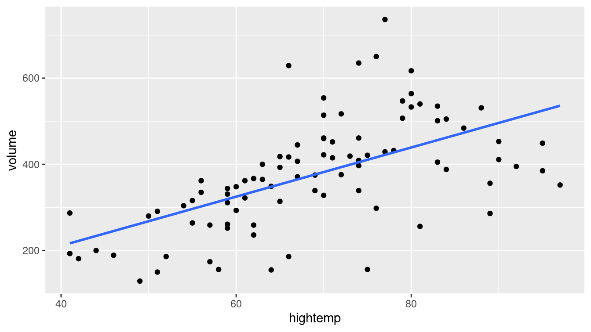
Figure E.1: Scatterplot of number of trail crossings as a function of highest daily temperature (in degrees Fahrenheit).
The first coefficient is \(\hat{\beta}_0\), the estimated \(y\)-intercept. The interpretation is that if the high temperature was 0 degrees Fahrenheit, then the estimated ridership would be about \(-17\) riders. This is doubly non-sensical in this context, since it is impossible to have a negative number of riders and this represents a substantial extrapolation to far colder temperatures than are present in the data set (recall the Challenger discussion from Chapter 2). It turns out that the monitoring equipment didn’t work when it got too cold, so values for those days are unavailable.
In this case, it is not appropriate to simply multiply the average number of users on the observed days by the number of days in a year, since cold days that are likely to have fewer trail users are excluded due to instrumentation issues. Such missing data can lead to selection bias.
The second coefficient (the slope) is usually more interesting. This coefficient (\(\hat{\beta}_1\)) is interpreted as the predicted increase in trail users for each additional degree in temperature. We expect to see about 5.7 additional riders use the rail trail on a day that is 1 degree warmer than another day.
E.1.2 Model visualization
Figure E.1 allows us to visualize our model in the data space. How does our model compare to a null model? That is, how do we know that our model is useful?
library(broom)
mod_avg <- RailTrail %>%
lm(volume ~ 1, data = .) %>%
augment(RailTrail)
mod_temp <- RailTrail %>%
lm(volume ~ hightemp, data = .) %>%
augment(RailTrail)
mod_data <- bind_rows(mod_avg, mod_temp) %>%
mutate(model = rep(c("null", "slr"), each = nrow(RailTrail)))In Figure E.2, we compare the least squares regression line (right) with the null model that simply returns the average for every input (left). That is, on the left, the average temperature of the day is ignored. The model simply predicts an average ridership every day, regardless of the temperature. However, on the right, the model takes the average ridership into account, and accordingly makes a different prediction for each input value.
ggplot(data = mod_data, aes(x = hightemp, y = volume)) +
geom_smooth(
data = filter(mod_data, model == "null"),
method = "lm", se = FALSE, formula = y ~ 1,
color = "dodgerblue", size = 0.5
) +
geom_smooth(
data = filter(mod_data, model == "slr"),
method = "lm", se = FALSE, formula = y ~ x,
color = "dodgerblue", size = 0.5
) +
geom_segment(
aes(xend = hightemp, yend = .fitted),
arrow = arrow(length = unit(0.1, "cm")),
size = 0.5, color = "darkgray"
) +
geom_point(color = "dodgerblue") +
facet_wrap(~model)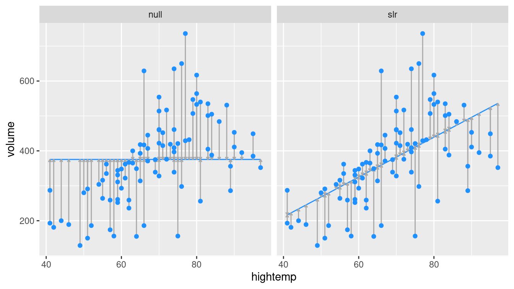
Figure E.2: At left, the model based on the overall average high temperature. At right, the simple linear regression model.
Obviously, the regression model works better than the null model (that forces the slope to be zero), since it is more flexible. But how much better?
E.1.3 Measuring the strength of fit
The correlation coefficient, \(r\), is used to quantify the strength of the linear relationship between two variables. We can quantify the proportion of variation in the response variable (\(y\)) that is explained by the model in a similar fashion. This quantity is called the coefficient of determination and is denoted \(R^2\). It is a common measure of goodness-of-fit for regression models. Like any proportion, \(R^2\) is always between 0 and 1. For simple linear regression (one explanatory variable), \(R^2 = r^2\). The definition of \(R^2\) is given by the following expression.
\[ \begin{aligned} R^2 &= 1 - \frac{SSE}{SST} = \frac{SSM}{SST} \\ &= 1 - \frac{\sum_{i=1}^n (y_i - \hat{y}_i)^2}{\sum_{i=1}^n (y_i - \bar{y})^2} \\ &= 1 - \frac{SSE}{(n-1) Var(y)} \, , \end{aligned} \]
Here, \(\hat{y}\) is the predicted value, \(Var(y)\) is the observed variance, \(SSE\) is the sum of the squared residuals, \(SSM\) is the sum of the squares attributed to the model, and \(SST\) is the total sum of the squares. We can calculate these values for the rail trail example.
n <- nrow(RailTrail)
SST <- var(pull(RailTrail, volume)) * (n - 1)
SSE <- var(residuals(mod)) * (n - 1)
1 - SSE / SST[1] 0.339glance(mod)# A tibble: 1 × 12
r.squared adj.r.squared sigma statistic p.value df logLik AIC BIC
<dbl> <dbl> <dbl> <dbl> <dbl> <dbl> <dbl> <dbl> <dbl>
1 0.339 0.332 104. 45.2 1.71e-9 1 -545. 1096. 1103.
# … with 3 more variables: deviance <dbl>, df.residual <int>, nobs <int>In Figure E.2, the null model on the left has an \(R^2\) of 0, because \(\hat{y}_i = \bar{y}\) for all \(i\), and so \(SSE = SST\). On the other hand, the \(R^2\) of the regression model on the right is 0.339. We say that the regression model based on average daily temperature explained about 34% of the variation in daily ridership.
E.1.4 Categorical explanatory variables
Suppose that instead of using temperature as our explanatory variable for ridership on the rail trail, we only considered whether it was a weekday or not a weekday (e.g., weekend or holiday). The indicator variable weekday is binary (or dichotomous) in that it only takes on the values 0 and 1. (Such variables are sometimes called indicator variables or more pejoratively dummy variables.)
This new linear regression model has the form: \[ \widehat{volume} = \hat{\beta}_0 + \hat{\beta}_1 \cdot \mathrm{weekday} \,, \] where the fitted coefficients are given below.
coef(lm(volume ~ weekday, data = RailTrail))(Intercept) weekdayTRUE
430.7 -80.3 Note that these coefficients could have been calculated from the means of the two groups (since the regression model has only two possible predicted values). The average ridership on weekdays is 350.4 while the average on non-weekdays is 430.7.
RailTrail %>%
group_by(weekday) %>%
summarize(mean_volume = mean(volume))# A tibble: 2 × 2
weekday mean_volume
<lgl> <dbl>
1 FALSE 431.
2 TRUE 350.In the coefficients listed above, the weekdayTRUE variable corresponds to rows in which the value of the weekday variable was TRUE (i.e., weekdays). Because this value is negative, our interpretation is that 80 fewer riders are expected on a weekday as opposed to a weekend or holiday.
To improve the readability of the output we can create a new variable with more mnemonic values.
RailTrail <- RailTrail %>%
mutate(day = ifelse(weekday == 1, "weekday", "weekend/holiday"))Care was needed to recode the weekday variable because it was a factor. Avoid the use of factors unless they are needed.
coef(lm(volume ~ day, data = RailTrail)) (Intercept) dayweekend/holiday
350.4 80.3
The model coefficients have changed (although they still provide the same interpretation). By default, the lm() function will pick the alphabetically lowest value of the categorical predictor as the reference group and create indicators for the other levels (in this case dayweekend/holiday). As a result the intercept is now the predicted number of trail crossings on a weekday.
In either formulation, the interpretation of the model remains the same: On a weekday, 80 fewer riders are expected than on a weekend or holiday.
E.2 Multiple regression
Multiple regression is a natural extension of simple linear regression that incorporates multiple explanatory (or predictor) variables. It has the general form:
\[ y = \beta_0 + \beta_1 x_1 + \beta_2 x_2 + \cdots + \beta_p x_p + \epsilon, \text{ where } \epsilon \sim N(0, \sigma_\epsilon) \,. \]
The estimated coefficients (i.e., \(\hat{\beta}_i\)’s) are now interpreted as “conditional on” the other variables—each \(\beta_i\) reflects the predicted change in \(y\) associated with a one-unit increase in \(x_i\), conditional upon the rest of the \(x_i\)’s. This type of model can help to disentangle more complex relationships between three or more variables. The value of \(R^2\) from a multiple regression model has the same interpretation as before: the proportion of variability explained by the model.
Interpreting conditional regression parameters can be challenging. The analyst needs to ensure that comparisons that hold other factors constant do not involve extrapolations beyond the observed data.
E.2.1 Parallel slopes: Multiple regression with a categorical variable
Consider first the case where \(x_2\) is an indicator variable that can only be 0 or 1 (e.g., weekday). Then,
\[
\hat{y} = \hat{\beta}_0 + \hat{\beta}_1 x_1 + \hat{\beta}_2 x_2 \,.
\]
In the case where \(x_1\) is quantitative but \(x_2\) is an indicator variable, we have:
\[ \begin{aligned} \text{For weekends, } \qquad \hat{y} |_{ x_1, x_2 = 0} &= \hat{\beta}_0 + \hat{\beta}_1 x_1 \\ \text{For weekdays, } \qquad \hat{y} |_{ x_1, x_2 = 1} &= \hat{\beta}_0 + \hat{\beta}_1 x_1 + \hat{\beta}_2 \cdot 1 \\ &= \left( \hat{\beta}_0 + \hat{\beta}_2 \right) + \hat{\beta}_1 x_1 \, . \end{aligned} \]
This is called a parallel slopes model (see Figure E.3), since the predicted values of the model take the geometric shape of two parallel lines with slope \(\hat{\beta}_1\): one with \(y\)-intercept \(\hat{\beta}_0\) for weekends, and another with \(y\)-intercept \(\hat{\beta}_0 + \hat{\beta}_2\) for weekdays.
mod_parallel <- lm(volume ~ hightemp + weekday, data = RailTrail)
tidy(mod_parallel)# A tibble: 3 × 5
term estimate std.error statistic p.value
<chr> <dbl> <dbl> <dbl> <dbl>
1 (Intercept) 42.8 64.3 0.665 0.508
2 hightemp 5.35 0.846 6.32 0.0000000109
3 weekdayTRUE -51.6 23.7 -2.18 0.0321 glance(mod_parallel)# A tibble: 1 × 12
r.squared adj.r.squared sigma statistic p.value df logLik AIC BIC
<dbl> <dbl> <dbl> <dbl> <dbl> <dbl> <dbl> <dbl> <dbl>
1 0.374 0.359 102. 25.9 1.46e-9 2 -542. 1093. 1103.
# … with 3 more variables: deviance <dbl>, df.residual <int>, nobs <int>mod_parallel %>%
augment() %>%
ggplot(aes(x = hightemp, y = volume, color = weekday)) +
geom_point() +
geom_line(aes(y = .fitted)) +
labs(color = "Is it a\nweekday?")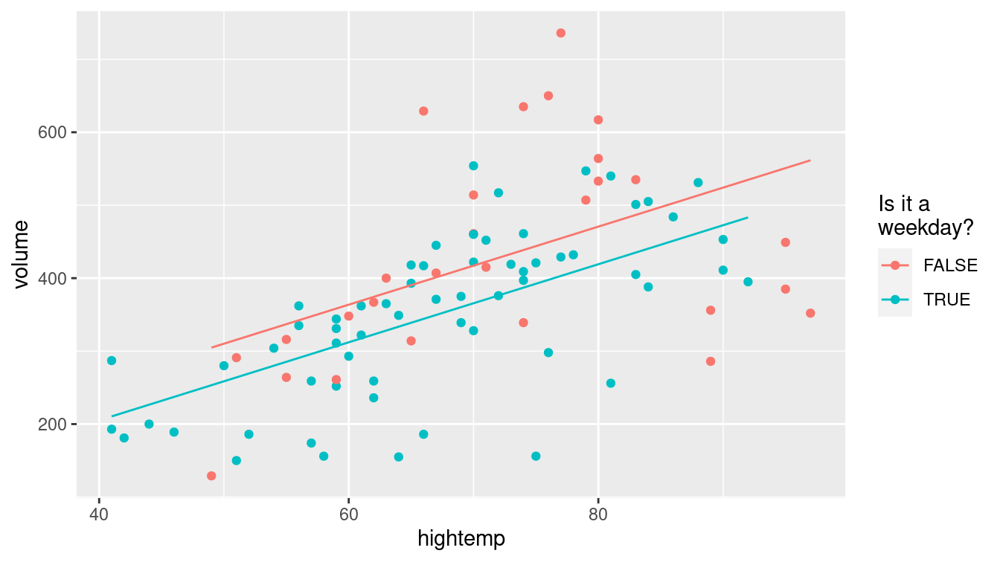
Figure E.3: Visualization of parallel slopes model for the rail trail data.
E.2.2 Parallel planes: Multiple regression with a second quantitative variable
If \(x_2\) is a quantitative variable, then we have:
\[ \hat{y} = \hat{\beta}_0 + \hat{\beta}_1 x_1 + \hat{\beta}_2 x_2 \,. \] Notice that our model is no longer a line, rather it is a plane that exists in three dimensions.
Now suppose that we want to improve our model for ridership by considering not only the average temperature, but also the amount of precipitation (rain or snow, measured in inches). We can do this in R by simply adding this variable to our regression model.
mod_plane <- lm(volume ~ hightemp + precip, data = RailTrail)
tidy(mod_plane)# A tibble: 3 × 5
term estimate std.error statistic p.value
<chr> <dbl> <dbl> <dbl> <dbl>
1 (Intercept) -31.5 55.2 -0.571 5.70e- 1
2 hightemp 6.12 0.794 7.70 1.97e-11
3 precip -153. 39.3 -3.90 1.90e- 4Note that the coefficient on hightemp (6.1 riders per degree) has changed from its value in the simple linear regression model (5.7 riders per degree). This is due to the moderating effect of precipitation. Our interpretation is that for each additional degree in temperature, we expect an additional 6.1 riders on the rail trail, after controlling for the amount of precipitation.
As you can imagine, the effect of precipitation is strong—some people may be less likely to bike or walk in the rain. Thus, even after controlling for temperature, an inch of rainfall is associated with a drop in ridership of about 153.
Note that since the median precipitation on days when there was precipitation was only 0.15 inches, a predicted change for an additional inch may be misleading. It may be better to report a predicted difference of 0.15 additional inches or replace the continuous term in the model with a dichotomous indicator of any precipitation.
If we added all three explanatory variables to the model we would have parallel planes.
mod_p_planes <- lm(volume ~ hightemp + precip + weekday, data = RailTrail)
tidy(mod_p_planes)# A tibble: 4 × 5
term estimate std.error statistic p.value
<chr> <dbl> <dbl> <dbl> <dbl>
1 (Intercept) 19.3 60.3 0.320 7.50e- 1
2 hightemp 5.80 0.799 7.26 1.59e-10
3 precip -146. 38.9 -3.74 3.27e- 4
4 weekdayTRUE -43.1 22.2 -1.94 5.52e- 2E.2.3 Non-parallel slopes: Multiple regression with interaction
Let’s return to a model that includes weekday and hightemp as predictors.
What if the parallel lines model doesn’t fit well?
Adding an additional term into the model can make it more flexible
and allow there to be a different slope on the two different types of days.
\[ \hat{y} = \hat{\beta}_0 + \hat{\beta}_1 x_1 + \hat{\beta}_2 x_2 + \hat{\beta}_3 x_1 x_2 \,. \] The model can also be described separately for weekends/holidays and weekdays.
\[ \begin{aligned} \text{For weekends, } \qquad \hat{y} |_{ x_1, x_2 = 0} &= \hat{\beta}_0 + \hat{\beta}_1 x_1 \\ \text{For weekdays, } \qquad \hat{y} |_{ x_1, x_2 = 1} &= \hat{\beta}_0 + \hat{\beta}_1 x_1 + \hat{\beta}_2 \cdot 1 + \hat{\beta}_3 \cdot x_1\\ &= \left( \hat{\beta}_0 + \hat{\beta}_2 \right) + \left( \hat{\beta}_1 + \hat{\beta}_3 \right) x_1 \, . \end{aligned} \]
This is called an interaction model (see Figure E.4). The predicted values of the model take the geometric shape of two non-parallel lines with different slopes.
mod_interact <- lm(volume ~ hightemp + weekday + hightemp * weekday,
data = RailTrail)
tidy(mod_interact)# A tibble: 4 × 5
term estimate std.error statistic p.value
<chr> <dbl> <dbl> <dbl> <dbl>
1 (Intercept) 135. 108. 1.25 0.215
2 hightemp 4.07 1.47 2.78 0.00676
3 weekdayTRUE -186. 129. -1.44 0.153
4 hightemp:weekdayTRUE 1.91 1.80 1.06 0.292 glance(mod_interact)# A tibble: 1 × 12
r.squared adj.r.squared sigma statistic p.value df logLik AIC BIC
<dbl> <dbl> <dbl> <dbl> <dbl> <dbl> <dbl> <dbl> <dbl>
1 0.382 0.360 102. 17.7 4.96e-9 3 -542. 1094. 1106.
# … with 3 more variables: deviance <dbl>, df.residual <int>, nobs <int>mod_interact %>%
augment() %>%
ggplot(aes(x = hightemp, y = volume, color = weekday)) +
geom_point() +
geom_line(aes(y = .fitted)) +
labs(color = "Is it a\nweekday?")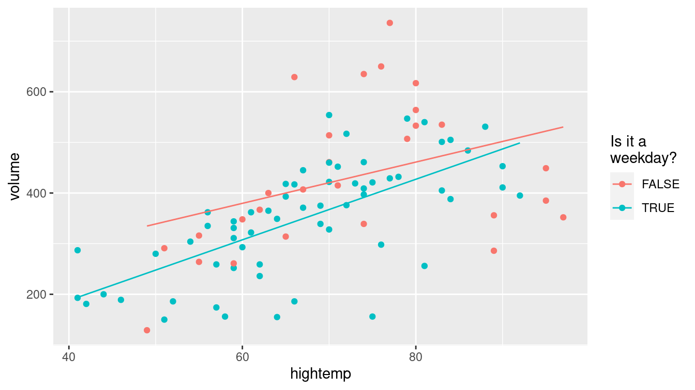
Figure E.4: Visualization of interaction model for the rail trail data.
We see that the slope on weekdays is about two riders per degree higher than on weekends and holidays. This may indicate that trail users on weekends and holidays are less concerned about the temperature than on weekdays.
E.2.4 Modeling non-linear relationships
A linear model with a single parameter fits well in many situations but is not appropriate in others. Consider modeling height (in centimeters) as a function of age (in years) using data from a subset of female subjects included in the National Health and Nutrition Examination Study (from the NHANES package) with a linear term. Another approach uses a smoother instead of a linear model. Unlike the straight line, the smoother can bend to better fit the points when modeling the functional form of a relationship (see Figure E.5).
library(NHANES)
NHANES %>%
sample(300) %>%
filter(Gender == "female") %>%
ggplot(aes(x = Age, y = Height)) +
geom_point() +
geom_smooth(method = lm, se = FALSE) +
geom_smooth(method = loess, se = FALSE, color = "green") +
xlab("Age (in years)") +
ylab("Height (in cm)")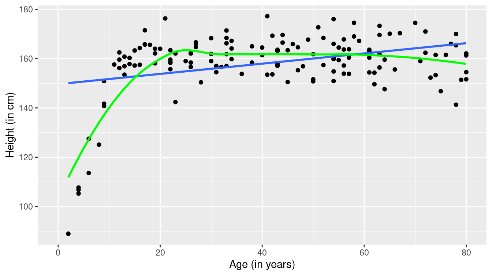
Figure E.5: Scatterplot of height as a function of age with superimposed linear model (blue) and smoother (green).
The fit of the linear model (denoted in blue) is poor: A straight line does not account for the dramatic increases in height during puberty to young adulthood or for the gradual decline in height for older subjects. The smoother (in green) does a much better job of describing the functional form.
The improved fit does come with a cost. Compare the results for linear and smoothed models in Figure E.6. Here the functional form of the relationship between high temperature and volume of trail use is closer to linear (with some deviation for warmer temperatures).
ggplot(data = RailTrail, aes(x = hightemp, y = volume)) +
geom_point() +
geom_smooth(method = lm) +
geom_smooth(method = loess, color = "green") +
ylab("Number of trail crossings") +
xlab("High temperature (F)") 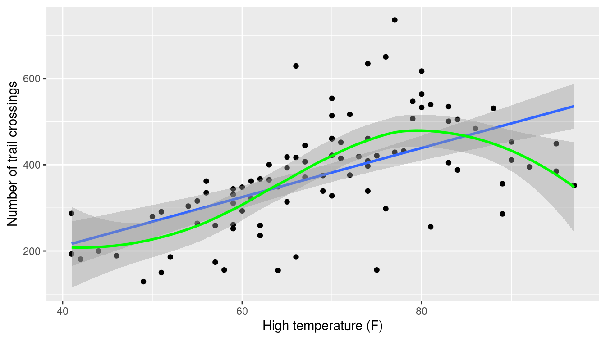
Figure E.6: Scatterplot of volume as a function of high temperature with superimposed linear and smooth models for the rail trail data.
The width of the confidence bands (95% confidence interval at each point) for the smoother tend to be wider than that for the linear model. This is one of the costs of the additional flexibility in modeling. Another cost is interpretation: It is more complicated to explain the results from the smoother than to interpret a slope coefficient (straight line).
E.3 Inference for regression
Thus far, we have fit several models and interpreted their estimated coefficients. However, with the exception of the confidence bands in Figure E.6, we have only made statements about the estimated coefficients (i.e., the \(\hat{\beta}\)’s)—we have made no statements about the true coefficients (i.e., the \(\beta\)’s), the values of which of course remain unknown.
However, we can use our understanding of the \(t\)-distribution to make inferences about the true value of regression coefficients. In particular, we can test a hypothesis about \(\beta_1\) (most commonly that it is equal to zero) and find a confidence interval (range of plausible values) for it.
tidy(mod_p_planes)# A tibble: 4 × 5
term estimate std.error statistic p.value
<chr> <dbl> <dbl> <dbl> <dbl>
1 (Intercept) 19.3 60.3 0.320 7.50e- 1
2 hightemp 5.80 0.799 7.26 1.59e-10
3 precip -146. 38.9 -3.74 3.27e- 4
4 weekdayTRUE -43.1 22.2 -1.94 5.52e- 2glance(mod_p_planes)# A tibble: 1 × 12
r.squared adj.r.squared sigma statistic p.value df logLik AIC BIC
<dbl> <dbl> <dbl> <dbl> <dbl> <dbl> <dbl> <dbl> <dbl>
1 0.461 0.443 95.2 24.6 1.44e-11 3 -536. 1081. 1094.
# … with 3 more variables: deviance <dbl>, df.residual <int>, nobs <int>
In the output above, the p-value that is associated with the hightemp coefficient is displayed as 1.59e-10 (or nearly zero).
That is, if the true coefficient (\(\beta_1\)) was in fact zero, then the probability of observing an association on ridership due to average temperature as large or larger than the one we actually observed in the data, after controlling for precipitation and day of the week, is essentially zero.
This output suggests that the hypothesis that \(\beta_1\) was in fact zero is dubious based on these data.
Perhaps there is a real association between ridership and average temperature?
Very small p-values should be rounded to the nearest 0.0001. We suggest reporting this p-value as \(p<0.0001\).
Another way of thinking about this process is to form a confidence interval around our estimate of the slope coefficient \(\hat{\beta}_1\). Here we can say with 95% confidence that the value of the true coefficient \(\beta_1\) is between 4.21 and 7.39 riders per degree. That this interval does not contain zero confirms the result from the hypothesis test.
confint(mod_p_planes) 2.5 % 97.5 %
(Intercept) -100.63 139.268
hightemp 4.21 7.388
precip -222.93 -68.291
weekdayTRUE -87.27 0.976E.4 Assumptions underlying regression
The inferences we made above were predicated upon our assumption that the slope follows a \(t\)-distribution. This follows from the assumption that the errors follow a normal distribution (with mean 0 and standard deviation \(\sigma_\epsilon\), for some constant \(\sigma_\epsilon\)). Inferences from the model are only valid if the following assumptions hold:
Linearity: The functional form of the relationship between the predictors and the outcome follows a linear combination of regression parameters that are correctly specified (this assumption can be verified by bivariate graphical displays).
Independence: Are the errors uncorrelated? Or do they follow a pattern (perhaps over time or within clusters of subjects)?
Normality of residuals: Do the residuals follow a distribution that is approximately normal? This assumption can be verified using univariate displays.
Equal variance of residuals: Is the variance in the residuals constant across the explanatory variables (homoscedastic errors)? Or does the variance in the residuals depend on the value of one or more of the explanatory variables (heteroscedastic errors)? This assumption can be verified using residual diagnostics.
These conditions are sometimes called the “LINE” assumptions. All but the independence assumption can be assessed using diagnostic plots.
How might we assess the mod_p_planes model?
Figure E.7 displays a scatterplot of residuals versus fitted (predicted) values.
As we observed in Figure E.6, the number of crossings does not increase as much for warm temperatures as it does for more moderate ones. We may need to consider a more sophisticated model with a more complex model for temperature.
mplot(mod_p_planes, which = 1, system = "ggplot2")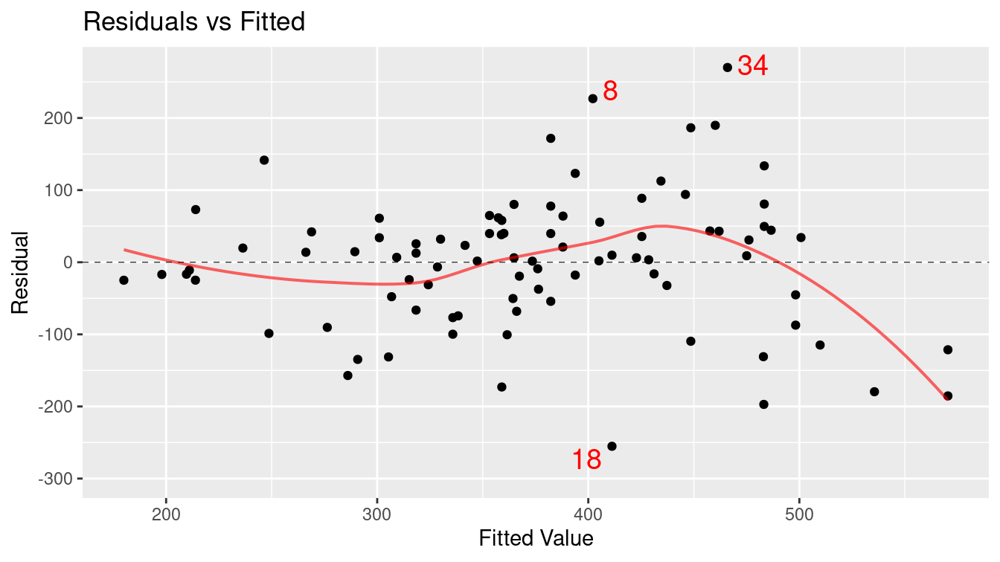
Figure E.7: Assessing linearity using a scatterplot of residuals versus fitted (predicted) values.
Figure E.8 displays the quantile-quantile plot for the residuals from the regression model. The plot deviates from the straight line: This indicates that the residuals have heavier tails than a normal distribution.
mplot(mod_p_planes, which = 2, system = "ggplot2")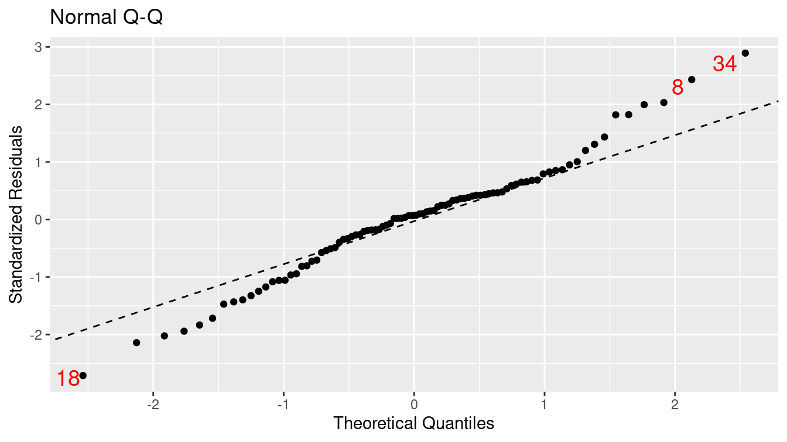
Figure E.8: Assessing normality assumption using a Q–Q plot.
Figure E.9 displays the scale-location plot for the residuals from the model: The results indicate that there is evidence of heteroscedasticity (the variance of the residuals increases as a function of predicted value).
mplot(mod_p_planes, which = 3, system = "ggplot2")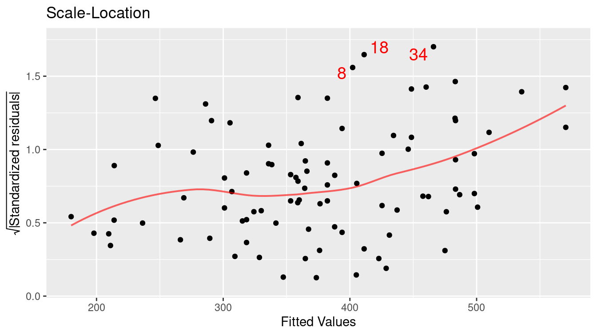
Figure E.9: Assessing equal variance using a scale–location plot.
When performing model diagnostics, it is important to identify any outliers and understand their role in determining the regression coefficients.
- We call observations that don’t seem to fit the general pattern of the data outliers Figures E.7, E.8, and E.9 mark three points (8, 18, and 34) as values that large negative or positive residuals that merit further exploration.
- An observation with an extreme value of the explanatory variable is a point of high leverage.
- A high leverage point that exerts disproportionate influence on the slope of the regression line is an influential point.
Figure E.10 displays the values for Cook’s distance (a common measure of influential points in a regression model).
mplot(mod_p_planes, which = 4, system = "ggplot2")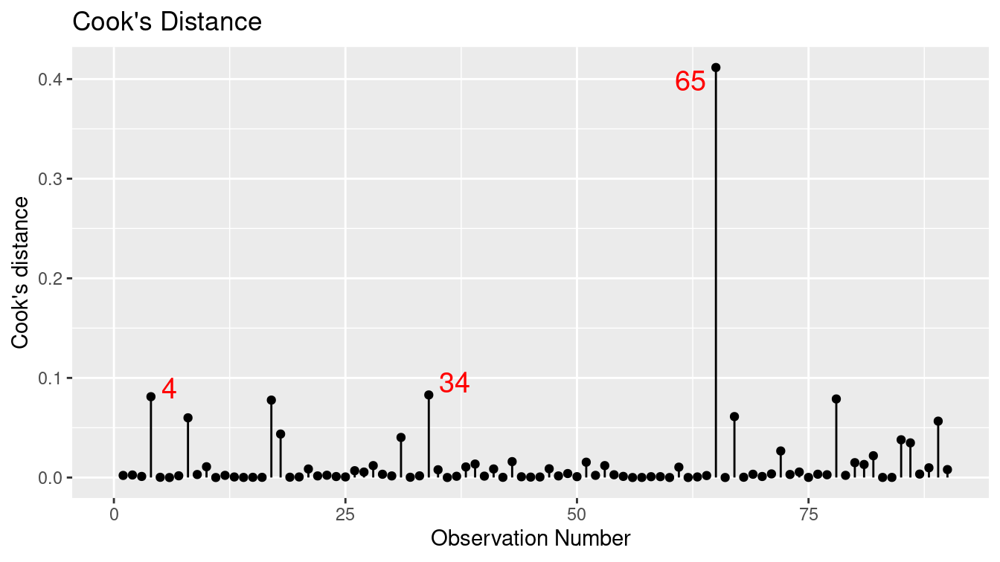
Figure E.10: Cook’s distance for rail trail model.
We can use the augment() function from the broom package to calculate the value of
this statistic and identify the most extreme Cook’s distance.
library(broom)
augment(mod_p_planes) %>%
mutate(row_num = row_number()) %>%
select(-.std.resid, -.sigma) %>%
filter(.cooksd > 0.4)# A tibble: 1 × 9
volume hightemp precip weekday .fitted .resid .hat .cooksd row_num
<int> <int> <dbl> <lgl> <dbl> <dbl> <dbl> <dbl> <int>
1 388 84 1.49 TRUE 246. 142. 0.332 0.412 65Observation 65 has the highest Cook’s distance. It references a day with nearly one and a half inches of rain (the most recorded in the dataset) and a high temperature of 84 degrees. This data point has high leverage and is influential on the results. Observations 4 and 34 also have relatively high Cook’s distances and may merit further exploration.
E.5 Logistic regression
Our previous examples had quantitative (or continuous) outcomes. What happens when we are interested in modeling a dichotomous outcome? For example, we might model the probability of developing diabetes as a function of age and BMI (we explored this question further in Chapter 11). Figure E.11 displays the scatterplot of diabetes status as a function of age, while Figure E.12 displays the scatterplot of diabetes as a function of BMI (body mass index). Note that each subject can either have diabetes or not, so all of the points are displayed at 0 or 1 on the \(y\)-axis.
NHANES <- NHANES %>%
mutate(has_diabetes = as.numeric(Diabetes == "Yes"))log_plot <- ggplot(data = NHANES, aes(x = Age, y = has_diabetes)) +
geom_jitter(alpha = 0.1, height = 0.05) +
geom_smooth(method = "glm", method.args = list(family = "binomial")) +
ylab("Diabetes status") +
xlab("Age (in years)")
log_plot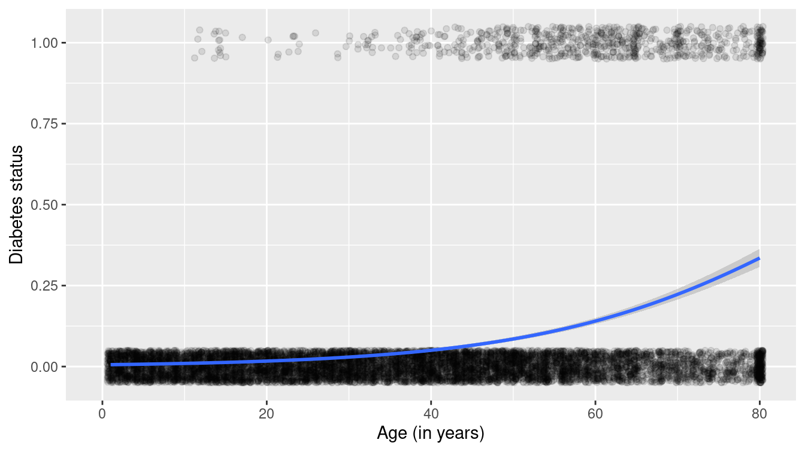
Figure E.11: Scatterplot of diabetes as a function of age with superimposed smoother.
log_plot + aes(x = BMI) + xlab("BMI (body mass index)")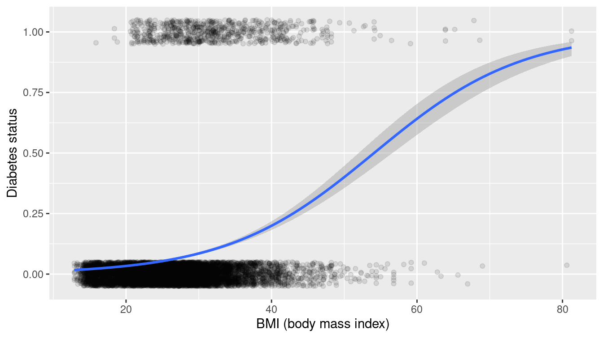
Figure E.12: Scatterplot of diabetes as a function of BMI with superimposed smoother.
We see that the probability that a subject has diabetes tends to increase as both a function of age and of BMI.
Which variable is more important: Age or BMI?
We can use a multiple logistic regression model to model the probability of diabetes as a function of both predictors.
logreg <- glm(has_diabetes ~ BMI + Age, family = "binomial", data = NHANES)
tidy(logreg)# A tibble: 3 × 5
term estimate std.error statistic p.value
<chr> <dbl> <dbl> <dbl> <dbl>
1 (Intercept) -8.08 0.244 -33.1 1.30e-239
2 BMI 0.0943 0.00552 17.1 1.74e- 65
3 Age 0.0573 0.00249 23.0 2.28e-117The answer is that both predictors seem to be important (since both p-values are very small). To interpret the findings, we might consider a visual display of predicted probabilities as displayed in Figure E.13 (compare with Figure 11.11).
library(modelr)
fake_grid <- data_grid(
NHANES,
Age = seq_range(Age, 100),
BMI = seq_range(BMI, 100)
)
y_hats <- fake_grid %>%
mutate(y_hat = predict(logreg, newdata = ., type = "response"))
head(y_hats, 1)# A tibble: 1 × 3
Age BMI y_hat
<dbl> <dbl> <dbl>
1 0 12.9 0.00104The predicted probability from the model is given by:
\[
\pi_i = \mathrm{logit} \left( P (y_i = 1) \right) = \frac{e^{\beta_0 + \beta_1 Age_i + \beta_2 BMI_i}}{1 + e^{\beta_0 + \beta_1 Age_i + \beta_2 BMI_i}}\ \ \text{ for } i=1,\ldots,n \,.
\]
Let’s consider a hypothetical 0 year old with a BMI of 12.9 (corresponding to the first entry in the y_hats dataframe).
Their predicted probability of having diabetes would be calculated as a function of the regression coefficients.
linear_component <- c(1, 12.9, 0) %*% coef(logreg)
exp(linear_component) / (1 + exp(linear_component)) [,1]
[1,] 0.00104The predicted probability is very small: about 1/10th of 1%.
But what about a 60 year old with a BMI of 25?
linear_component <- c(1, 25, 60) %*% coef(logreg)
exp(linear_component) / (1 + exp(linear_component)) [,1]
[1,] 0.0923The predicted probability is now 9.2%.
ggplot(data = NHANES, aes(x = Age, y = BMI)) +
geom_tile(data = y_hats, aes(fill = y_hat), color = NA) +
geom_count(aes(color = factor(has_diabetes)), alpha = 0.8) +
scale_fill_gradient(low = "white", high = "red") +
scale_color_manual("Diabetes", values = c("gold", "black")) +
scale_size(range = c(0, 2)) +
labs(fill = "Predicted\nprobability")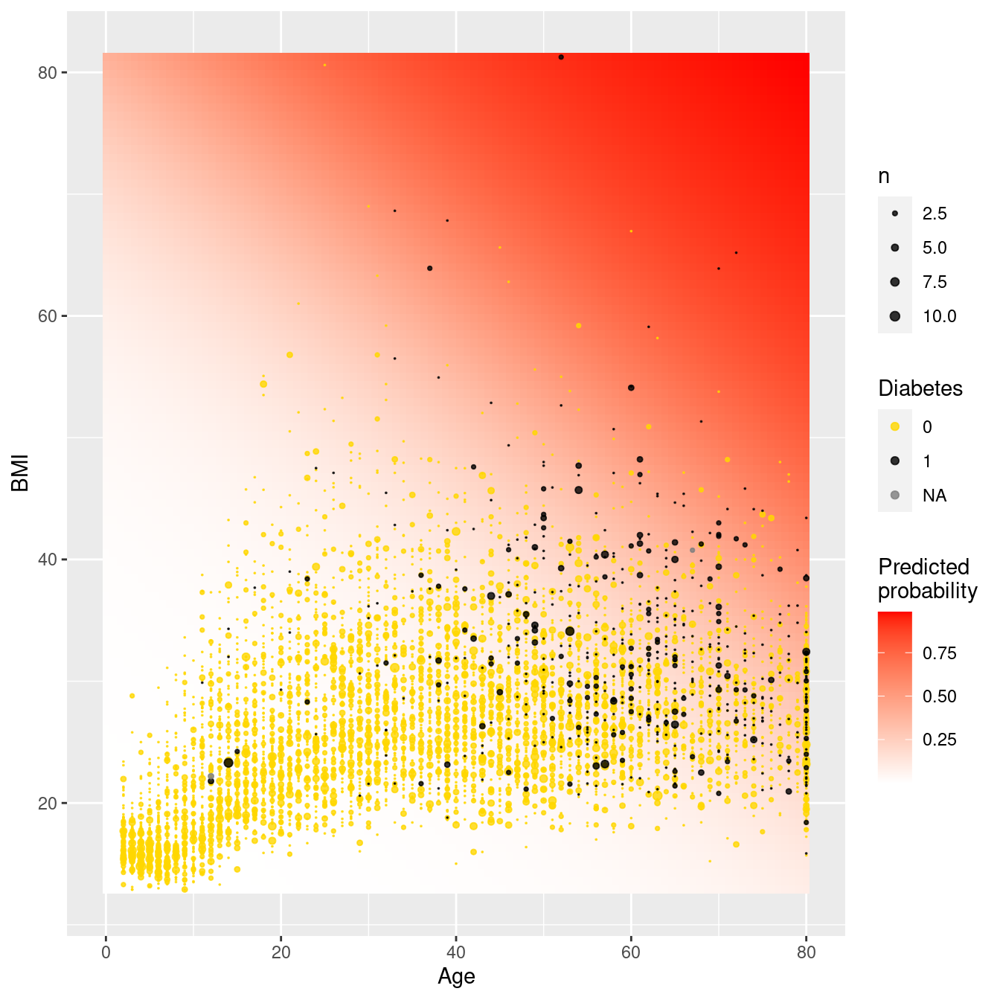
Figure E.13: Predicted probabilities for diabetes as a function of BMI and age.
Figure E.13 displays the predicted probabilities for each of our grid points. We see that very few young adults have diabetes, even if they have moderately high BMI scores. As we look at older subjects while holding BMI fixed, the predicted probability of diabetes increases.
E.6 Further resources
Regression is described in many books. An introduction is found in most introductory statistics textbooks, including Open Intro Statistics (Diez, Barr, and Çetinkaya-Rundel 2019). For a deeper but still accessible treatment, we suggest Cannon et al. (2019). G. James et al. (2013) and Hastie, Tibshirani, and Friedman (2009) also cover regression from a modeling and machine learning perspective. Hoaglin (2016) provides guidance on how to interpret conditional regression parameters. Cook (1982) comprehensively reviews regression diagnostics. An accessible introduction to smoothing can be found in Ruppert, Wand, and Carroll (2003).
E.7 Exercises
Problem 1 (Easy): In 1966, Cyril Burt published a paper called The genetic determination of differences in intelligence: A study of monozygotic twins reared apart. The data consist of IQ scores for [an assumed random sample of] 27 identical twins, one raised by foster parents, the other by the biological parents.
Here is the regression output for using Biological IQ to predict Foster IQ:
library(mdsr)
library(faraway)
mod <- lm(Foster ~ Biological, data = twins)
coef(mod)(Intercept) Biological
9.208 0.901 mosaic::rsquared(mod)[1] 0.778Which of the following is FALSE? Justify your answers.
- Alice and Beth were raised by their biological parents. If Beth’s IQ is 10 points higher than Alice’s, then we would expect that her foster twin Bernice’s IQ is 9 points higher than the IQ of Alice’s foster twin Ashley.
- Roughly 78% of the foster twins’ IQs can be accurately predicted by the model.
- The linear model is \(\widehat{Foster} = 9.2 + 0.9 \times Biological\).
- Foster twins with IQs higher than average are expected to have biological twins with higher than average IQs as well.
Problem 2 (Medium): The atus package includes data from the American Time Use Survey (ATUS). Use the atusresp dataset to model hourly_wage as a function of other predictors in the dataset.
Problem 3 (Medium): The Gestation data set in mdsr contains birth weight, date, and gestational period collected as part of the Child Health and Development Studies. Information about the baby’s parents—age, education, height, weight, and whether the mother smoked is also recorded.
- Fit a linear regression model for birthweight (
wt) as a function of the mother’s age (age). - Find a 95% confidence interval and p-value for the slope coefficient.
- What do you conclude about the association between a mother’s age and her baby’s birthweight?
Problem 4 (Medium): The Child Health and Development Studies investigate a range of topics. One study, in particular, considered all pregnancies among women in the Kaiser Foundation Health Plan in the San Francisco East Bay area. The goal is to model the weight of the infants (bwt, in ounces) using variables including length of pregnancy in days (gestation), mother’s age in years (age), mother’s height in inches (height), whether the child was the first born (parity), mother’s pregnancy weight in pounds (weight), and whether the mother was a smoker (smoke).
The summary table that follows shows the results of a regression model for predicting the average birth weight of babies based on all of the variables included in the data set.
library(mdsr)
library(mosaicData)
babies <- Gestation %>%
rename(bwt = wt, height = ht, weight = wt.1) %>%
mutate(parity = parity == 0, smoke = smoke > 0) %>%
select(id, bwt, gestation, age, height, weight, parity, smoke)
mod <- lm(bwt ~ gestation + age + height + weight + parity + smoke,
data = babies
)
coef(mod)(Intercept) gestation age height weight parityTRUE
-85.7875 0.4601 0.0429 1.0623 0.0653 -2.9530
smokeTRUE
NA Answer the following questions regarding this linear regression model.
The coefficient for
parityis different than if you fit a linear model predicting weight using only that variable. Why might there be a difference?Calculate the residual for the first observation in the data set.
This data set contains missing values. What happens to these rows when we fit the model?
Problem 5 (Medium): Investigators in the HELP (Health Evaluation and Linkage to Primary Care) study were interested in modeling predictors of being homeless (one or more nights spent on the street or in a shelter in the past six months vs. housed) using baseline data from the clinical trial. Fit and interpret a parsimonious model that would help the investigators identify predictors of homelessness.
E.8 Supplementary exercises
Available at https://mdsr-book.github.io/mdsr2e/ch-regression.html#regression-online-exercises
Problem 1 (Medium): In the HELP (Health Evaluation and Linkage to Primary Care) study, investigators were interested in determining predictors of severe depressive symptoms (measured by the Center for Epidemiologic Studies—Depression scale, cesd) amongst a cohort enrolled at a substance abuse treatment facility. These predictors include substance of abuse (alcohol, cocaine, or heroin), mcs (a measure of mental well-being), gender, and housing status (housed or homeless). Answer the following questions regarding the following multiple regression model.
library(mdsr)
fm <- lm(cesd ~ substance + mcs + sex + homeless, data = HELPrct)
msummary(fm) Estimate Std. Error t value Pr(>|t|)
(Intercept) 57.7794 1.4664 39.40 <2e-16 ***
substancecocaine -3.5406 1.0101 -3.51 0.0005 ***
substanceheroin -1.6818 1.0731 -1.57 0.1178
mcs -0.6407 0.0338 -18.97 <2e-16 ***
sexmale -3.3239 1.0075 -3.30 0.0010 **
homelesshoused -0.8327 0.8686 -0.96 0.3383
Residual standard error: 8.97 on 447 degrees of freedom
Multiple R-squared: 0.492, Adjusted R-squared: 0.486
F-statistic: 86.4 on 5 and 447 DF, p-value: <2e-16confint(fm) 2.5 % 97.5 %
(Intercept) 54.898 60.661
substancecocaine -5.526 -1.555
substanceheroin -3.791 0.427
mcs -0.707 -0.574
sexmale -5.304 -1.344
homelesshoused -2.540 0.874Write out the linear model.
Calculate the predicted CESD for a female homeless cocaine-involved subject with an MCS score of 20.
Identify the null and alternative hypotheses for the 8 tests displayed above.
Interpret the 95% confidence interval for the
substancecocainecoefficient.Make a conclusion and summarize the results of a test of the
homelessparameter.Report and interpret the \(R^2\) (coefficient of determination) for this model.
Which of the residual diagnostic plots are redundant?
What do we conclude about the distribution of the residuals?
What do we conclude about the relationship between the fitted values and the residuals?
What do we conclude about the relationship between the MCS score and the residuals?
What other things can we learn from the residual diagnostics?
Which observations should we flag for further study?